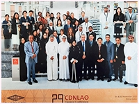
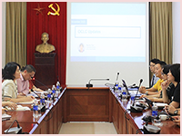
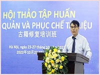

TIN TỨC - SỰ KIỆN
-
THƯ VIỆN QUỐC GIA VIỆT NAM THAM DỰ HỘI NGHỊ GIÁM ĐỐC THƯ VIỆN QUỐC GIA CÁC NƯỚC CHÂU Á - CHÂU ĐẠI DƯƠNG
 “Thu thập và kết nối: Thư viện Quốc gia và các Bộ sưu tập” là chủ đề Hội nghị thường niên Giám đốc Thư viện Quốc gia các nước Châu Á - Châu Đại Dương lần thứ 29 (CDNL-AO29) diễn ra tại Doha, Qatar từ ngày 01-02/11/2023. Ông Nguyễn Xuân Dũng, Giám đốc Thư viện Quốc gia Việt Nam tham dự sự kiện này. Tại Hội nghị, các thư viện quốc gia thành viên đã thảo luận sôi nổi về các hoạt động thu thập bộ sưu tập đại diện cho cộng đồng, tăng cường cơ hội tiếp cận các bộ sưu tập di sản và các phương pháp thu hút sự quan tâm của cộng đồng qua bộ sưu tập quốc gia. -
ĐẠI DIỆN OCLC CHÂU Á-THÁI BÌNH DƯƠNG THĂM, LÀM VIỆC TẠI THƯ VIỆN QUỐC GIA VIỆT NAM
 “Chiều ngày 01 tháng 11 năm 2023, bà Shu-En Tsai, Giám đốc điều hành Mạng lưới Thư viện Toàn cầu OCLC khu vực Châu Á-Thái Bình Dương và các cộng sự đã tới thăm và làm việc tại Thư viện Quốc gia Việt Nam. Bà Nguyễn Ngọc Anh, Phó Giám đốc Thư viện tiếp đoàn. Tại buổi tiếp, đại diện OCLC khu vực Châu Á-Thái Bình Dương đã giới thiệu thông tin cập nhật về OCLC và các sản phẩm, giải pháp của tổ chức này trong lĩnh vực thư viện: Worldcat, Syndeo, WorldShare Management Services, Worldcat Discovery Services, EZ Proxy... -
HỘI THẢO TẬP HUẤN BẢO QUẢN, PHỤC CHẾ TÀI LIỆU TẠI THƯ VIỆN QUỐC GIA VIỆT NAM
 “Được sự đồng ý của Bộ Văn hóa, Thể thao và Du lịch, sáng ngày 23/10/2023, TVQG phối hợp với Đại sứ quán Trung Quốc tại Việt Nam khai mạc Hội thảo Tập huấn Bảo quản, phục chế tài liệu. Khoá tập huấn được tổ chức kéo dài từ ngày 23-25/10/2023 với sự tham gia của hơn 100 học viên. Nội dung khoá Tập huấn đa dạng, kết hợp giữa lý thuyết và thực hành, bao gồm các chuyên đề: Bảo quản và sử dụng an toàn sách cổ và sưu tập đặc biệt; Bảo quản tài liệu truyền thống; Bảo quản số và Công cụ; Thực hành bảo tồn lâu dài và hoạch định chiến lược tài nguyên số; Phục chế loại hình tài liệu chuyên biệt…
- CHÍNH THỨC KHỞI ĐỘNG CUỘC THI ĐẠI SỨ VĂN HOÁ ĐỌC THÀNH PHỐ HÀ NỘI LẦN THỨ III
- HÀ NỘI PHÁT ĐỘNG CUỘC THI ĐẠI SỨ VĂN HOÁ ĐỌC LẦN THỨ III - NĂM 2023 VỚI CHỦ ĐỀ “SÁCH: KẾT NỐI TRI THỨC - KIẾN TẠO TƯƠNG LAI”
- LỄ PHÁT ĐỘNG CUỘC THI ĐẠI SỨ VĂN HÓA ĐỌC THÀNH PHỐ HÀ NỘI LẦN THỨ III, NĂM 2023
- HỘI THI THIẾU NHI THỦ ĐÔ TUYÊN TRUYỀN, GIỚI THIỆU SÁCH NĂM 2023: “TỰ HÀO THĂNG LONG – HÀ NỘI NGÀN NĂM VĂN HIẾN”
- LÀM GÌ ĐỂ THƯ VIỆN TRỞ NÊN HẤP DẪN?
- LỄ PHÁT ĐỘNG CUỘC THI ĐẠI SỨ VĂN HÓA ĐỌC THÀNH PHỐ HÀ NỘI LẦN THỨ III, NĂM 2023
- HÀ NỘI PHÁT ĐỘNG CUỘC THI ĐẠI SỨ VĂN HOÁ ĐỌC LẦN THỨ III - NĂM 2023 VỚI CHỦ ĐỀ “SÁCH: KẾT NỐI TRI THỨC - KIẾN TẠO TƯƠNG LAI”
- CHÍNH THỨC KHỞI ĐỘNG CUỘC THI ĐẠI SỨ VĂN HOÁ ĐỌC THÀNH PHỐ HÀ NỘI LẦN THỨ